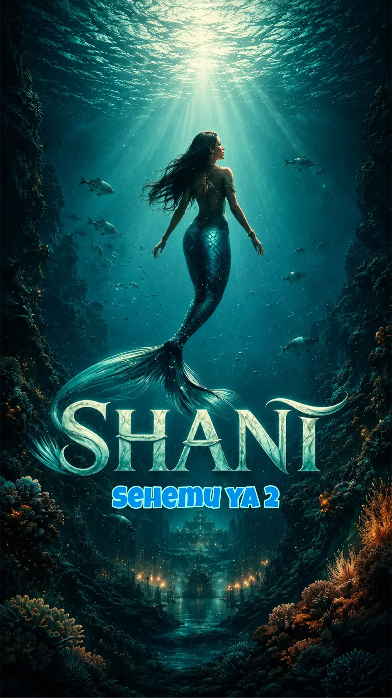

Hadithi za Bure
Hapa unaweza kusoma sura mbalimbali za hadithi zetu zilizochaguliwa bila gharama yoyote.
What If I Am A Dad? - Chapter 2
Miaka ilizidi kusonga mbele kama mawingu yanayosukumwa na upepo, lakini lile swali la ndani ya fikra zangu kuhusu sura mbili za baba yangu liliendelea kukua ndani yangu sawa na kimo changu. Hata hivyo, maisha hayakutupa nafasi ya kutulia na kutafakari sana...
Shani
Ilianza kama Jumanne tulivu, siku iliyochanua kwa furaha na matumaini mapya kwa familia ya Alexander Edward, tajiri mkubwa mwenye ushawishi mkubwa serikalini na miongoni mwa wananchi. Kwa miaka mingi...
Suzy wa Mbezi - Sehemu ya 2
Baada ya lile tukio la landlord wake, Suzy alirudi chumbani kwake, akakaa kitandani, mikono kichwani, macho yake yakitazama juu ya dari inayovuja akitafakari kwa kina...
Suzy wa Mbezi
Dar es Salaam, Jiji linalokukimbiza hata kama huna haraka, yani ni lazima utakimbia tu. Jiji ambalo usafiri wa daladala ni darasa tosha, foleni ni somo zito, na mtaa ndio chuo kikuu cha maisha...

What If I Am A Dad?
Giza lilitanda chumbani, likipasuliwa tu na mwanga hafifu wa taa ya njano iliyokuwa kwenye kona ya ukuta. Nilikuwa nimesimama hapo, kimya kabisa, nikiogopa hata kuvuta pumzi kwa nguvu isije ikaharibu utulivu ule ulikuwepo...

Shani - Sehemu ya 2
Bahari ilikuwa imepoteza ustaarabu wake. Mawimbi makubwa yalinyanyuka kama kuta za giza yakibeba ghadhabu ya dunia kana kwamba miungu ya kale ilikuwa imekasirika na kulipiza kisasi. Radi ilinguruma kwa kishindo cha kutisha...
Shani - Sehemu ya 3
Sauti nzito ya mtangazaji wa habari ilipasua ukimya, ikisindikizwa na maandishi mekundu yaliyokuwa yakipita kwa kasi chini ya kioo cha runinga...
Safari ya Jangwani
Jua la utosini lilikuwa likiteketeza kila kilicho hai. Katikati ya jangwa lile, kikundi cha wasafiri kilitambua kwamba dira yao ya mwelekeo ilikuwa imeharibika ghafla...